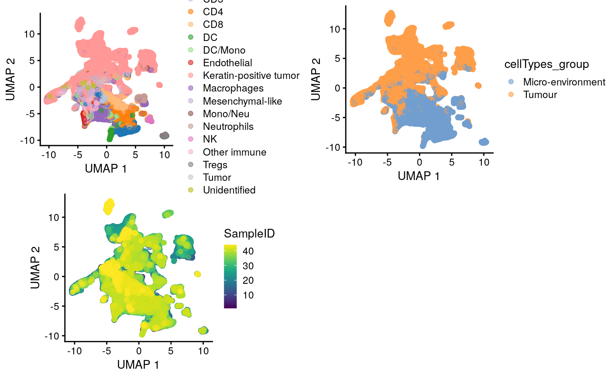
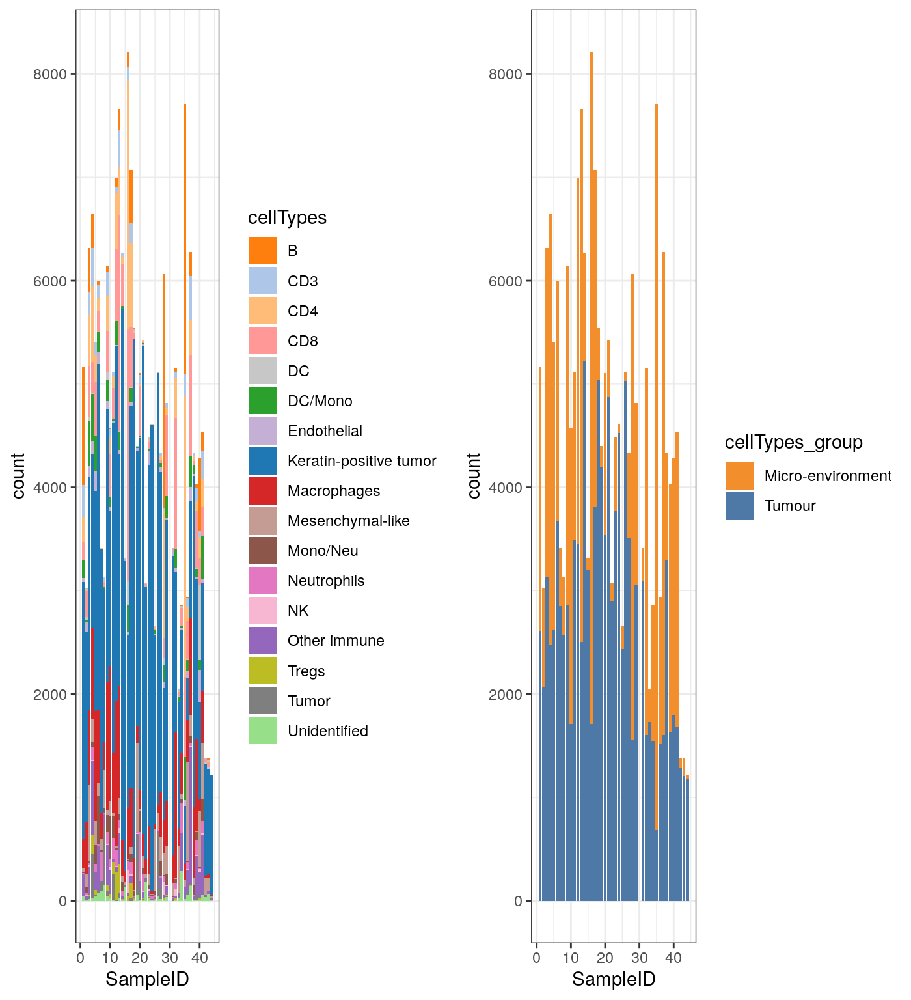

library(scater) library(SingleCellExperiment) library(ggthemes) library(ggplot2) library(ggridges) library(plyr) library(raster) library(gridExtra) library(sp) library(spatstat) library(uwot) library(pheatmap) #source("R/image_analysis_function.R") set.seed(2020)
load("data/mibiSCE.rda") mibi.sce
## class: SingleCellExperiment
## dim: 49 201656
## metadata(0):
## assays(1): mibi_exprs
## rownames(49): C Na ... Ta Au
## rowData names(4): channel_name is_protein hgnc_symbol wagner_overlap
## colnames: NULL
## colData names(36): SampleID cellLabelInImage ...
## Survival_days_capped_2016.1.1 Censored
## reducedDimNames(0):
## altExpNames(0):cat("Patients information")
## Patients informationtable(mibi.sce$SampleID)
##
## 1 2 3 4 5 6 7 8 9 10 11 12 13 14 15 16
## 5167 3028 6315 6643 5406 5998 3410 3136 6139 4580 5112 6995 7665 6270 3315 8212
## 17 18 19 20 21 22 23 24 25 26 27 28 29 31 32 33
## 7071 5539 4400 5103 5423 3072 4490 4613 2658 5119 4332 6061 4819 3415 5158 2046
## 34 35 36 37 38 39 40 41 42 43 44
## 2856 7716 2939 6280 4330 4030 4285 4532 1380 1381 1217cat("Cell types informaton")
## Cell types informaton# table(mibi.sce$tumor_group) # table(mibi.sce$immune_group) # rename the cell types mibi.sce$cellTypes <- ifelse(as.character(mibi.sce$immune_group) != "not immune", as.character(mibi.sce$immune_group), as.character(mibi.sce$tumor_group)) table(mibi.sce$cellTypes)
##
## B CD3 CD4
## 9134 3867 12443
## CD8 DC DC/Mono
## 15787 1275 5052
## Endothelial Keratin-positive tumor Macrophages
## 2089 102736 20687
## Mesenchymal-like Mono/Neu Neutrophils
## 8479 3113 3020
## NK Other immune Tregs
## 674 6943 1341
## Tumor Unidentified
## 3177 1839mibi.sce$cellTypes_group <- ifelse(as.character(mibi.sce$immune_group) != "not immune", "Micro-environment", "Tumour") selected_chanel_mibi <- rownames(mibi.sce)[rowData(mibi.sce)$is_protein == 1]
# color for mibi cell types cellTypes_group_mibi_color <- tableau_color_pal("Tableau 10")(length(unique(mibi.sce$cellTypes_group))) cellTypes_group_mibi_color <- c(cellTypes_group_mibi_color, "black") names(cellTypes_group_mibi_color) <- c(unique(mibi.sce$cellTypes_group), "Background") cellTypes_mibi_color <- tableau_color_pal("Classic 20")(length(unique(mibi.sce$cellTypes))) cellTypes_mibi_color <- c(cellTypes_mibi_color, "black") names(cellTypes_mibi_color) <- c(unique(mibi.sce$cellTypes), "Background")
Visualising all cells using UMAP
## Dimension Reduction using UMAP mibi.sce <- runUMAP(mibi.sce, exprs_values = "mibi_exprs", subset_row = selected_chanel_mibi) g1 <- plotUMAP(mibi.sce, colour_by = "cellTypes") + theme(aspect.ratio = 1) g2 <- plotUMAP(mibi.sce, colour_by = "cellTypes_group") + theme(aspect.ratio = 1) g3 <- plotUMAP(mibi.sce, colour_by = "SampleID") + theme(aspect.ratio = 1) grid.arrange(g1, g2, g3, ncol = 2)

Cell type composition
df_mibi <- data.frame(colData(mibi.sce)) g1 <- ggplot(df_mibi, aes(x = SampleID, fill = cellTypes)) + geom_bar() + theme_bw() + scale_fill_manual(values = cellTypes_mibi_color) + theme(legend.position = "right") g2 <- ggplot(df_mibi, aes(x = SampleID, fill = cellTypes_group)) + geom_bar() + theme_bw() + scale_fill_manual(values = cellTypes_group_mibi_color) + theme(legend.position = "right") grid.arrange(g1, g2, ncol = 2)

## R version 4.0.2 (2020-06-22)
## Platform: x86_64-pc-linux-gnu (64-bit)
## Running under: Ubuntu 20.04 LTS
##
## Matrix products: default
## BLAS/LAPACK: /usr/lib/x86_64-linux-gnu/openblas-openmp/libopenblasp-r0.3.8.so
##
## locale:
## [1] LC_CTYPE=en_US.UTF-8 LC_NUMERIC=C
## [3] LC_TIME=en_US.UTF-8 LC_COLLATE=en_US.UTF-8
## [5] LC_MONETARY=en_US.UTF-8 LC_MESSAGES=C
## [7] LC_PAPER=en_US.UTF-8 LC_NAME=C
## [9] LC_ADDRESS=C LC_TELEPHONE=C
## [11] LC_MEASUREMENT=en_US.UTF-8 LC_IDENTIFICATION=C
##
## attached base packages:
## [1] parallel stats4 stats graphics grDevices utils datasets
## [8] methods base
##
## other attached packages:
## [1] pheatmap_1.0.12 uwot_0.1.8
## [3] spatstat_1.64-1 rpart_4.1-15
## [5] nlme_3.1-148 spatstat.data_1.4-3
## [7] gridExtra_2.3 raster_3.3-13
## [9] sp_1.4-2 plyr_1.8.6
## [11] ggridges_0.5.2 ggthemes_4.2.0
## [13] scater_1.17.4 ggplot2_3.3.2
## [15] SingleCellExperiment_1.11.6 SummarizedExperiment_1.19.6
## [17] DelayedArray_0.15.7 matrixStats_0.56.0
## [19] Matrix_1.2-18 Biobase_2.49.0
## [21] GenomicRanges_1.41.5 GenomeInfoDb_1.25.8
## [23] IRanges_2.23.10 S4Vectors_0.27.12
## [25] BiocGenerics_0.35.4
##
## loaded via a namespace (and not attached):
## [1] bitops_1.0-6 fs_1.5.0
## [3] RcppAnnoy_0.0.16 RColorBrewer_1.1-2
## [5] rprojroot_1.3-2 tools_4.0.2
## [7] backports_1.1.8 R6_2.4.1
## [9] irlba_2.3.3 vipor_0.4.5
## [11] mgcv_1.8-31 colorspace_1.4-1
## [13] withr_2.2.0 tidyselect_1.1.0
## [15] compiler_4.0.2 BiocNeighbors_1.7.0
## [17] desc_1.2.0 labeling_0.3
## [19] scales_1.1.1 pkgdown_1.5.1
## [21] goftest_1.2-2 stringr_1.4.0
## [23] digest_0.6.25 spatstat.utils_1.17-0
## [25] rmarkdown_2.3 XVector_0.29.3
## [27] pkgconfig_2.0.3 htmltools_0.5.0
## [29] rlang_0.4.7 DelayedMatrixStats_1.11.1
## [31] farver_2.0.3 generics_0.0.2
## [33] BiocParallel_1.23.2 dplyr_1.0.1
## [35] RCurl_1.98-1.2 magrittr_1.5
## [37] BiocSingular_1.5.0 GenomeInfoDbData_1.2.3
## [39] scuttle_0.99.11 Rcpp_1.0.5
## [41] ggbeeswarm_0.6.0 munsell_0.5.0
## [43] abind_1.4-5 viridis_0.5.1
## [45] lifecycle_0.2.0 stringi_1.4.6
## [47] yaml_2.2.1 MASS_7.3-51.6
## [49] zlibbioc_1.35.0 grid_4.0.2
## [51] crayon_1.3.4 deldir_0.1-28
## [53] lattice_0.20-41 cowplot_1.0.0
## [55] splines_4.0.2 tensor_1.5
## [57] knitr_1.29 pillar_1.4.6
## [59] codetools_0.2-16 glue_1.4.1
## [61] evaluate_0.14 vctrs_0.3.2
## [63] gtable_0.3.0 purrr_0.3.4
## [65] polyclip_1.10-0 assertthat_0.2.1
## [67] xfun_0.16 rsvd_1.0.3
## [69] RSpectra_0.16-0 viridisLite_0.3.0
## [71] tibble_3.0.3 beeswarm_0.2.3
## [73] memoise_1.1.0 ellipsis_0.3.1